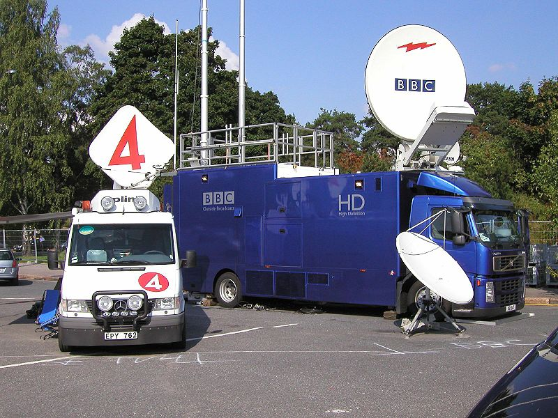
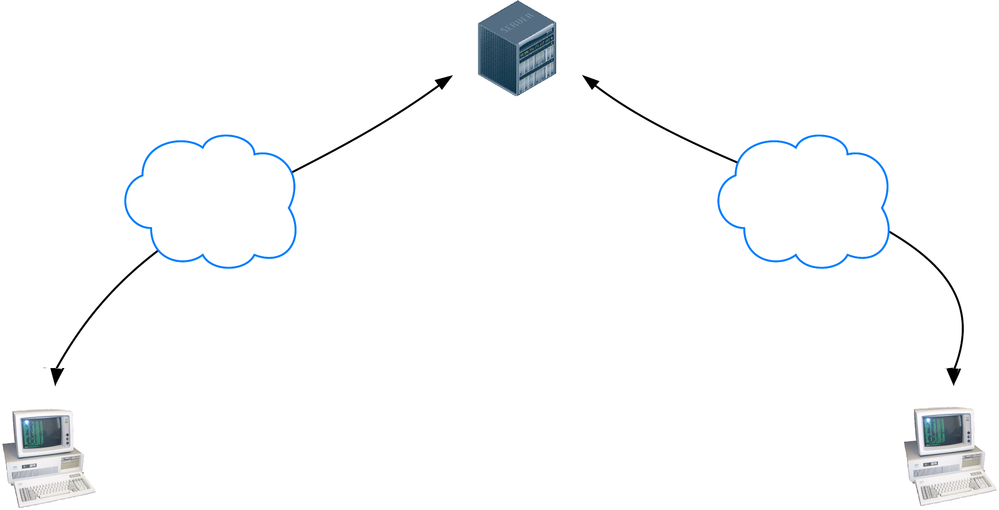
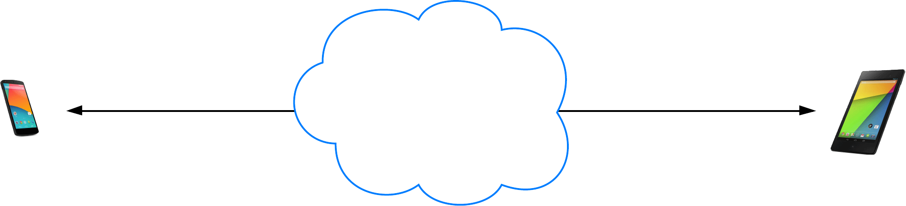
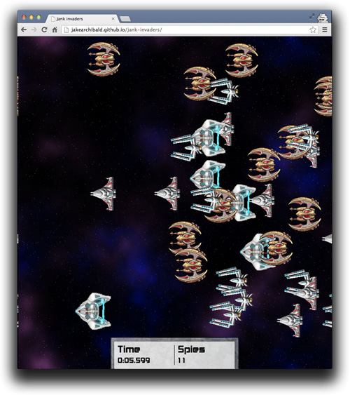

Two trends
The rise of mobile
The rise of media
Offline media
53% of adults media multi-task while watching TV
Online media
Video will be 80 to 90 percent of global internet consumer traffic by 2017
WebRTC
WebRTC LIVE!
WebRTC across platforms


1,000,000,000+
WebRTC endpoints


Peer to peer

What do we need for RTC?
- Acquire audio and video
- Establish a connection between peers
- Communicate audio and video
- Communicate arbitrary data
Three JavaScript APIs
- MediaStreams (aka getUserMedia)
- RTCPeerConnection
- RTCDataChannel
Communicate Media Streams

→
getUserMedia
+
RTCPeerConnection
←
getUserMedia
+
RTCPeerConnection
←

RTCPeerConnection does a lot
- Signal processing
- Codec handling
- Bandwidth management
- Peer to peer communication
- Security
...
The basics
The canonical, full-fat video chat app
Communicate arbitrary data

onreceivemessage = handle(data);
...
var myData = [
{
id: "ship1";
x: 24,
y: 11,
velocity: 7
},
....
]
send(myData);
→
RTCDataChannel
+
RTCPeerConnection
←
RTCDataChannel
+
RTCPeerConnection
←
onreceivemessage = handle(data);
...
var myData = [
{
id: "ship7";
x: 19,
y: 4,
velocity: 18
},
....
]
send(myData);

RTCDataChannel
- Same API as WebSocket
- Ultra-low latency
- Optionally unreliable or reliable:
— Firefox and Chrome 31, Chrome 30 behind a flag - Secure
The basics
File sharing with RTCDataChannel
Sharefest
Peer to peer file distribution with RTCDataChannel
peerCDN
Access local media
getUserMedia()
It's pretty simple.
var constraints = {video: true};
function successCallback(stream) {
var video = document.querySelector("video");
video.src = window.URL.createObjectURL(stream);
}
function errorCallback(error) {
console.log("navigator.getUserMedia error: ", error);
}
navigator.getUserMedia(constraints, successCallback, errorCallback);
gUM + Canvas
Select resolution
Select mic and camera
gUM screencapture!
Be sure to enable screen capture support in getUserMedia!
var constraints = {
video: {
mandatory: {
chromeMediaSource: 'screen'
}
}
};
navigator.webkitGetUserMedia(constraints, gotStream);
Media Stream Recording API
- Demo: simpl.info/mediarecorder
- Spec
- Chrome Intent to Implement
- Streams API
Media Stream Image Capture API
Demo- Spec
getFrame()creates anImageDataobject available inonframegrabtakePhoto()creates a Blob available inonphoto
Web Audio
<audio src='chrome.mp3' />
Why Web Audio when we have <audio>?
- Precise timing of multiple sounds
- Audio pipeline for routing and processing
- Analysis of audio data
- <audio> can be used as input to Web Audio!
The Web Audio pipeline
- Oscillators
- 3D positioning of sounds
- Fade-ins/fade-outs/sweeps
- Time-based event scheduling
- Doppler shift for moving sources
- Frequency and waveform analysis
- Acoustic environments: reverb, etc.
- Waveshaping (non-linear distortion)
- Dynamics processing (compression)
- Filtering effects: radio, telephone, etc.
- Low latency: input→speaker as low as 5ms
- Integrated with WebRTC through MediaStream
Web Audio is cross-browser!
- Chrome desktop and Android — including gUM input
- Firefox 25 desktop and Android!
- Safari 6.0+ and iOS6+
More information? Make the Web Rock!
getUserMedia ☞ Web Audio
// Success callback when requesting audio input stream
function gotStream(stream) {
var audioContext = new webkitAudioContext();
// Create an AudioNode from the stream
var mediaStreamSource = audioContext.createMediaStreamSource(stream);
// Connect it to the destination or any other node for processing!
mediaStreamSource.connect(audioContext.destination);
}
navigator.webkitGetUserMedia( {audio:true}, gotStream);
gUM + Web Audio + WebGL
gUM ☞ Web Audio ☞ RTCPeerConnection
Microphone ☞ processing ☞ stream!
navigator.getUserMedia('audio', gotAudio);
function gotAudio(stream) {
var microphone = context.createMediaStreamSource(stream);
var filter = context.createBiquadFilter();
var peer = context.createMediaStreamDestination();
microphone.connect(filter);
filter.connect(peer);
peerConnection.addStream(peer.stream);
}
Web MIDI
- New standard under development
- Connect controllers, synthesizers and more
- Implemented in Mac Chrome 30 behind a flag, others coming
Synths and drum machines
Codecs for the modern Web
VP8 and VP9
- VP8 built into devices — including camera chips
- Systems with dedicated VP8 support
- VP9 v H.264: Google I/O
Cross-platform tools
MSE and EME
Media Source Extensions
JavaScript can generate streams for playback
DASH
Dynamic Adaptive Streaming over HTTP
Encrypted Media Extensions
EME ClearKey demo
Synchronised metadata
Captions and subtitles
<video poster="images/poster.jpg" autoplay preload="metadata"> <source src="chrome.webm" type="video/webm" /> <source src="chrome.mp4" type="video/mp4" /> <track src="track.vtt" /> <p>Video element not supported.</p> </video>
Deep linking, deep search
Synchronised metadata
And finally...
Alpha transparency
Find out more
What works where
Fallbacks
- HTML only: Video for Everybody
- JavaScript player comparison:
More about media
- HTML5 Rocks
- A Digital Media Primer for Geeks
- Dive Into HTML5: Video on the Web
- Mozilla Developer Network: Using HTML5 audio and video
WebRTC
- chrome://webrtc-internals
- WebRTC and Web Audio resources list: bit.ly/webrtcwebaudio
- Google I/O 2013 WebRTC presentation
- Codelab: build a video chat client and Node/Socket.io signaling service
- HTML5 Rocks:
- WebRTC in the real world: STUN, TURN and signaling
- Capturing audio and video in HTML5
- Getting Started With WebRTC
- ...and a book: webrtcbook.com
<Thank You!>